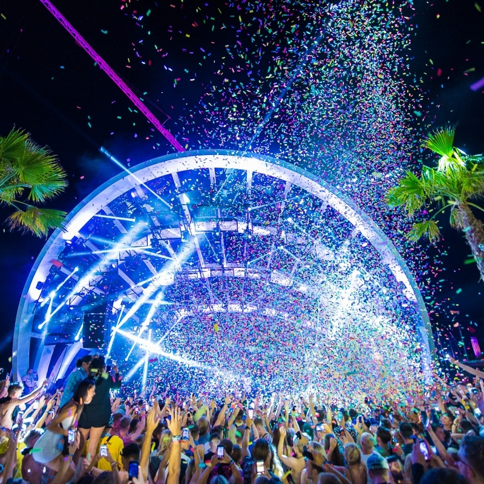

About Page
How we come about to creat these festival.

Everyone loves music and maybe you get people that don't like music, ever if you don't listen music ForThePeople Festivals is still for you because provide for everyone. If we dont have the type of festivals you are looking for, don't be scared to just send us an email (Contacts) and we will see if we can acommandate you need.Our festivals are For The People and are runned by the people.Everyone is part of the FTP Family and we want everyone to be apart of it.